From a widget's switch to the new version that carries it, and from your game's wording to drawing the prize.
The result
The home-screen widgets you chose ship in a new version of your app, and your event runs Play & Win and you draw the prize from its entries.
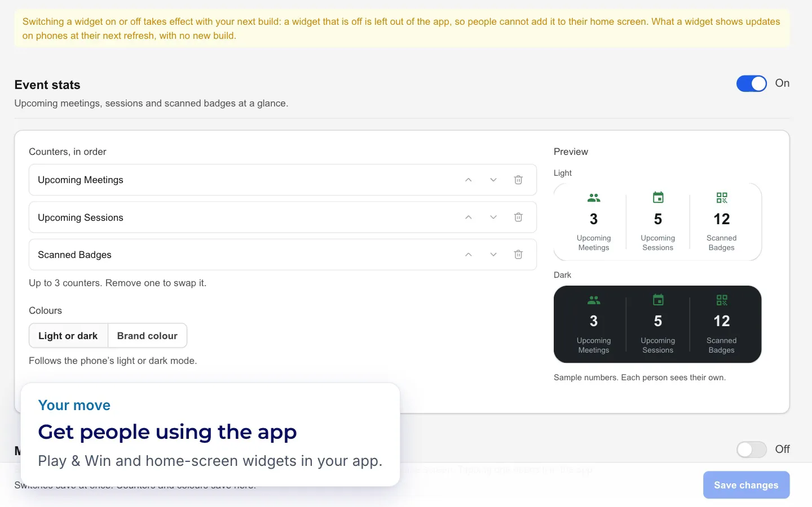
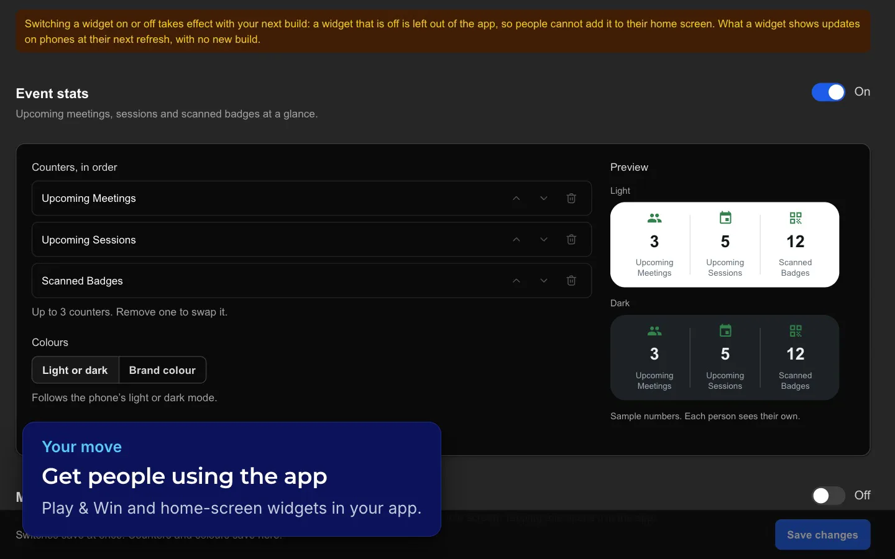
Get people using the app · 0:49App Studio, redrawn and animated from its code. Phone: the app in App Studio's preview, with sample content, October 2026.
Who does what
Your moveYou set up Play & Win for each event in App Studio and draw the prize from its entries; you choose the home-screen widgets, make a new build and ask to publish it.
Our team is on itYour ExpoPlatform team switches the app's AI assistant on, which Ask the assistant needs; they approve your request to publish the new version and start its rollout, and can change the same Play & Win settings from their own admin.
The store is on itApple and Google review the new version before people can download it.
Before you start, have ready
For the widgets, an app you can build: ExpoPlatform must have set it up in the App Store and Google Play.
For Ask the assistant, the app's AI assistant, which your ExpoPlatform team switches on, and the AI Synapsium block on your Home screen, which gives the widget its title, its line and the assistant's name.
An event in your app: Play & Win runs per event, and each event has its own game and entries.
Your own wording for any Play & Win text you want to change, in each language you need.
Your picture for the game, a PNG or JPEG of up to 10 MB, and the web address for the Book a meeting button if you want one.
For the stand kiosk, an iPad: it opens the kiosk link in Safari.
Stage 1 of 6
Choose your home-screen widgets
There are three widgets, Event stats, My agenda and Ask the assistant, set once for the whole app, which people place on their phone's own home screen. Start early: a widget you switch on ships with your next build, so switch it on before your app's first build, or ship it in a new version.
1
In Home-screen widgets, press a widget's switch so that it reads On.
Your move
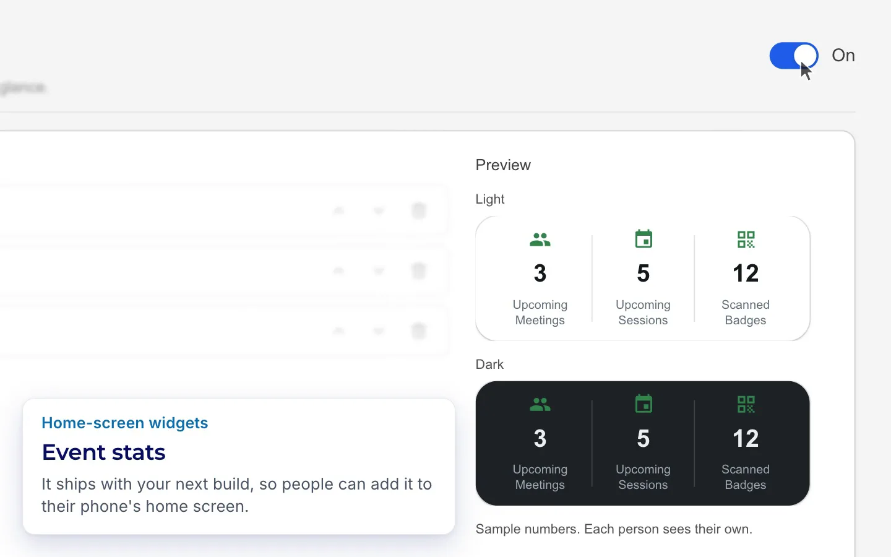
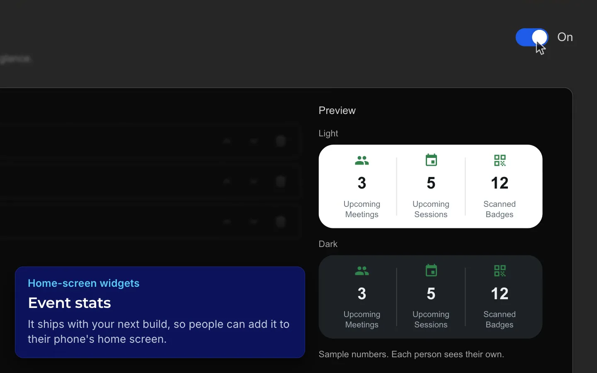
Event stats switched on: App Studio previews it and says it ships with your next build.App Studio, redrawn and animated from its code.Whole film
A widget you switch on ships with your next build, so people can add it to their phone's home screen.
Watch out
The switch saves at once, with the widget's last saved counters and colours, never unsaved ones.
Ask the assistant needs the app's AI assistant, which your ExpoPlatform team switches on; until then App Studio warns that this widget “would have nothing to open”.
Switching a widget off works the same way: your next build leaves it out, so people cannot add it to their home screen.
Done when: App Studio confirms with the widget's name and “is on. It ships with your next build.”
2
For Event stats, while it is on, choose up to three counters, in order, and press Save changes.
Your move
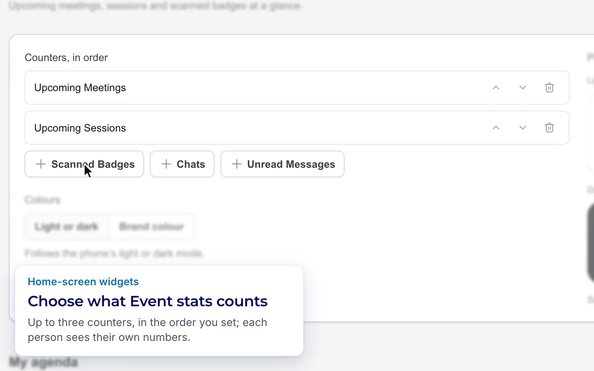
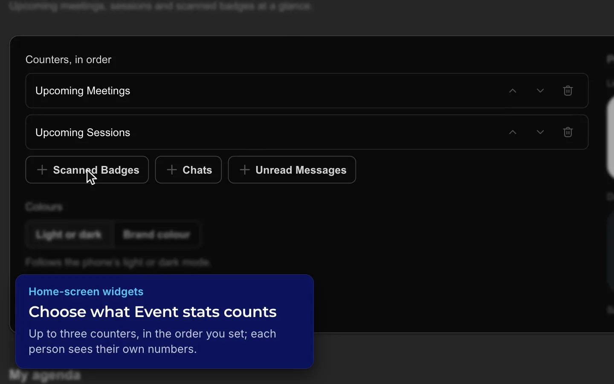
A counter removed and added back: Event stats shows up to three, in your order.App Studio, redrawn and animated from its code.Whole film
Event stats shows up to three counters, in your order, and each person sees their own numbers.
Watch out
Three counters are chosen at first, so the other buttons are hidden: remove one to add another (“Up to 3 counters. Remove one to swap it.”).
With no counter chosen, Save changes is held back: add one (“Choose at least one counter.”).
These are not the counters of the Stats at a glance block on the app's Home screen, which has its own list, set per event.
Done when: App Studio says “Widgets saved”.
3
Under each widget's Colours, choose Light or dark or Brand colour, and press Save changes.
Your move
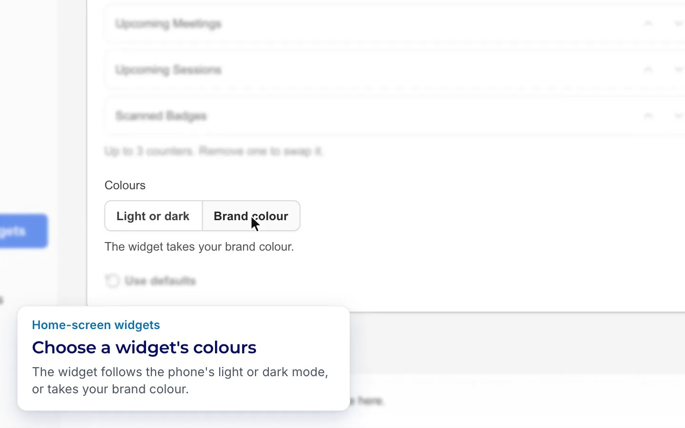
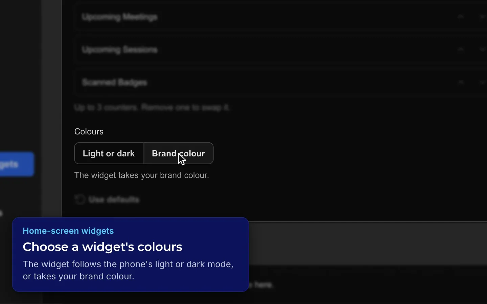
Brand colour chosen: App Studio's preview shows one card in your brand colour.App Studio, redrawn and animated from its code.Whole film
Light or dark follows the phone's light or dark mode, and Brand colour gives the widget your brand colour.
Watch out
Colours can be changed only while the widget is on.
Done when: The preview shows a Light and a Dark card, or one Brand colour card, and you pressed Save changes.
Stage 2 of 6
Ship the widgets in a new version
Switching a widget on or off reaches phones only with a new build: a test build first, then a store release, after ExpoPlatform's approval, the store's review and the rollout.
4
Make a new build in Build & test, check it on your phone, and publish it as a new version.
Your move
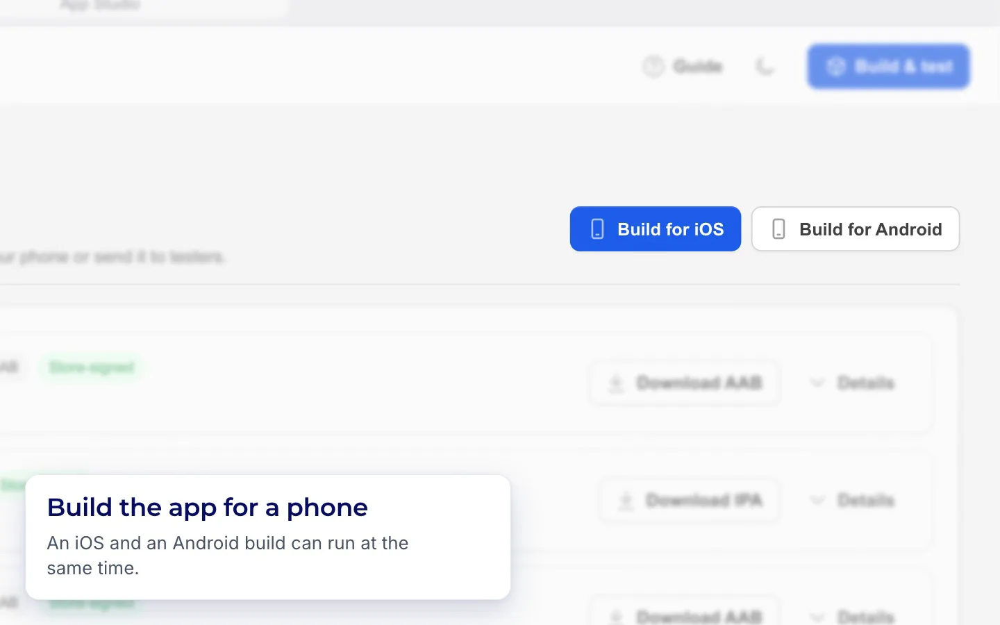
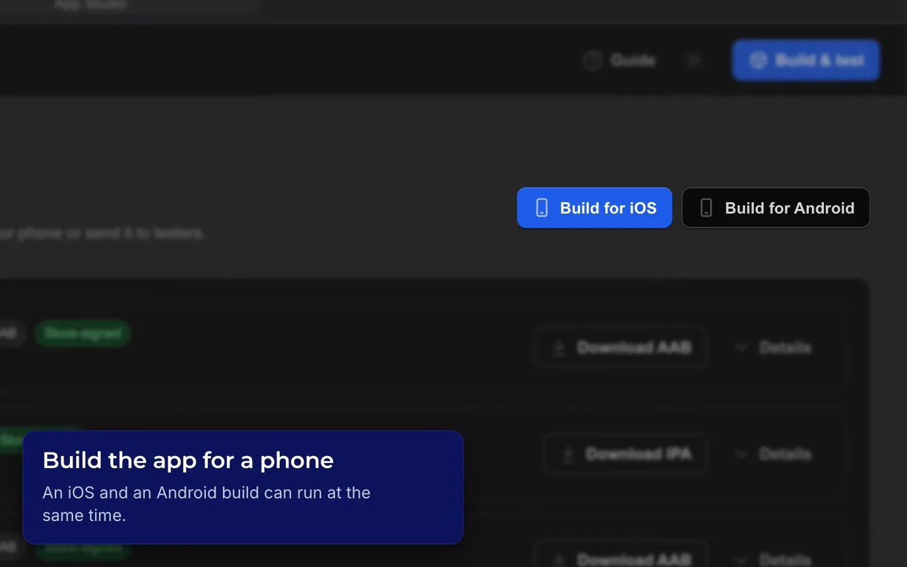
Build for iOS and Build for Android: one button per platform, in Build & test.App Studio, redrawn and animated from its code.Whole film
A new version goes the same way as your first: build, test, Submit to the stores, ExpoPlatform's approval, the store's review and the rollout.
Watch out
A later iPhone version, and Android beyond its first 5%, wait for your ExpoPlatform team to start the rollout: ask your ExpoPlatform contact.
On iPhone, the set-up step “Home-screen widgets ready” in Publish is done by your ExpoPlatform team, or by a signed iOS build, and does not block a release.
Done when: The new version's release reads Live on Releases.
Play & Win is a guessing game: attendees guess a number, agree to a separate consent, and you draw the prize from the entries. Each event runs its own game: read and set its texts, picture and link before you switch it on.
5
In Play & Win, under Texts, read each screen's wording, one language at a time, change what you want, and save.
Your move
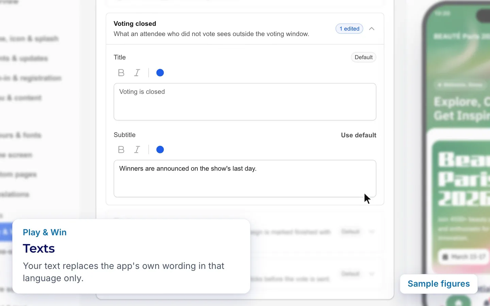
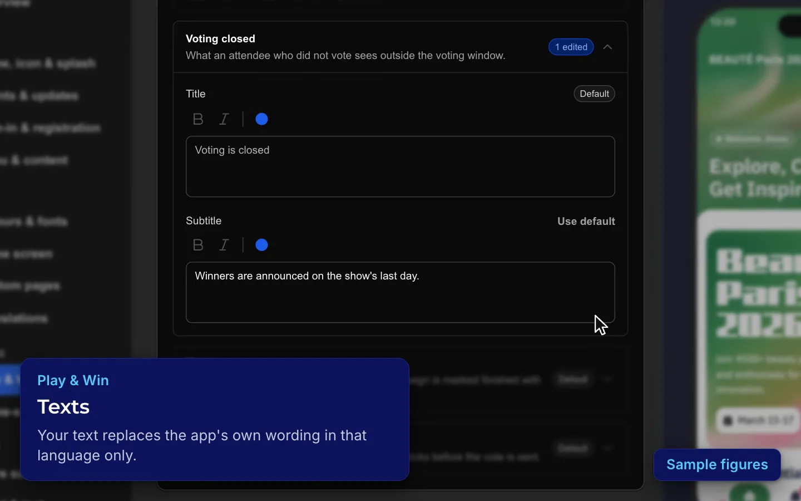
Voting closed opened, its subtitle replaced with a sample wording; the card then reads “1 edited”.App Studio, redrawn and animated from its code.Whole film
Your text replaces the app's own wording in that language only; texts you leave alone keep the app's wording.
Watch out
With several events, pick the event in Event first: Save Play & Win saves the selected event only.
Consent holds the separate consent an attendee ticks before the vote is sent: changing it, in any language, makes a new consent version once you save.
A text marked No default shows nothing in that language: type your own text for it.
Done when: Each card you changed shows how many texts are yours, such as “1 edited”, and you pressed Save Play & Win.
6
Under Picture and link, upload your picture, add a “Book a meeting” link if you want one, and save.
Your move
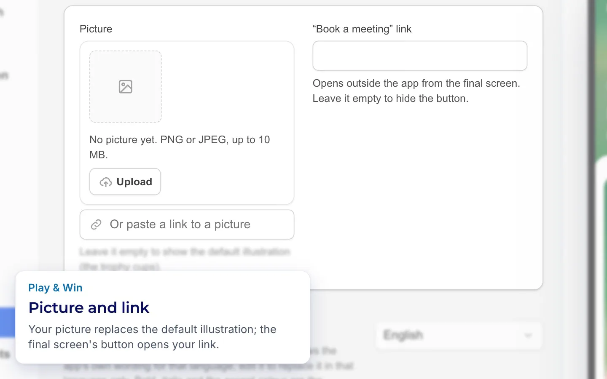
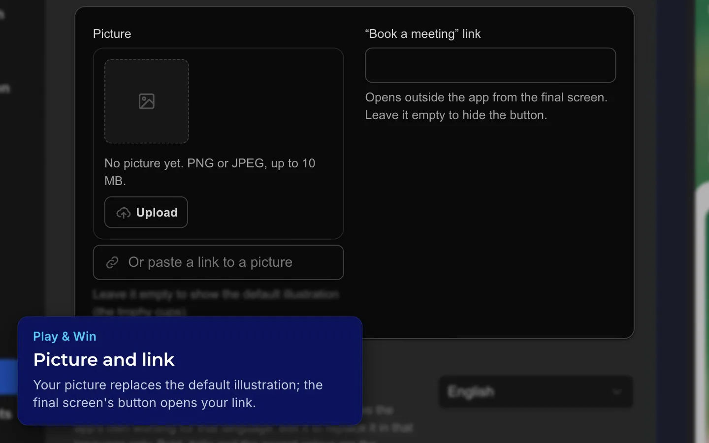
No picture yet, Upload or a picture's link; beside it, an empty “Book a meeting” link.App Studio, redrawn and animated from its code.Whole film
Your picture replaces the default illustration, and the final screen's Book a meeting button opens your link outside the app.
Watch out
The picture is stored as soon as it is uploaded, or fetched from a link you paste in Or paste a link to a picture, but this event uses it only after Save Play & Win.
With no link, the final screen shows no Book a meeting button.
Done when: Your picture's thumbnail shows under Picture, and you saved.
Stage 4 of 6
Switch Play & Win on and try it
Once Play & Win is on and saved, and in the event's menu, signed-in attendees see it there; Test mode lets you try it before the event starts.
7
In Play & Win, switch Play & Win on for your event and press Save Play & Win.
Your move
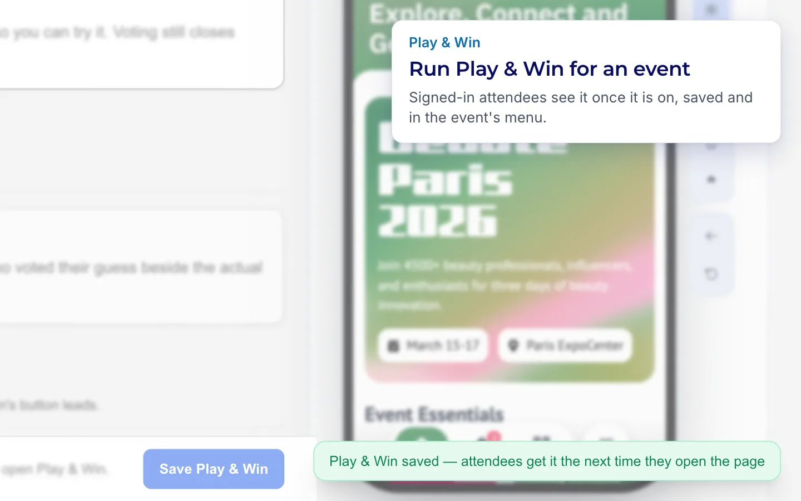
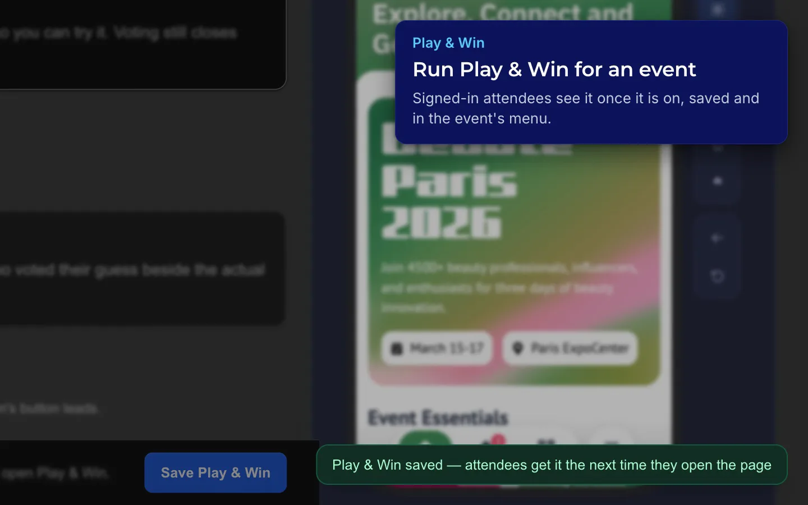
Play & Win switched on and saved; App Studio confirms attendees get it next time.App Studio, redrawn and animated from its code. Phone: the app in App Studio's preview, with sample content, October 2026.Whole film
Signed-in attendees then see Play & Win in the event's menu, as long as Play & Win is in that menu.
Watch out
With several events, pick the event in Event first: Save Play & Win saves the selected event only.
Done when: App Studio says “Play & Win saved — attendees get it the next time they open the page”.
8
Check that Play & Win is in the event's menu, in Menu & content.
Your move
Menu & content in the sidebar
The app's menu shows the Play & Win row only to signed-in people, only when the event's menu carries the row, and only while the campaign is on.
Watch out
Menu & content shows one event at a time, and switching the event drops unsaved changes without asking: save first.
If it is not there, ask your ExpoPlatform contact to add it.
Done when: You see Play & Win in the event's menu in Menu & content.
9
Switch Test mode on and save, then try voting in the app while signed in.
Your move
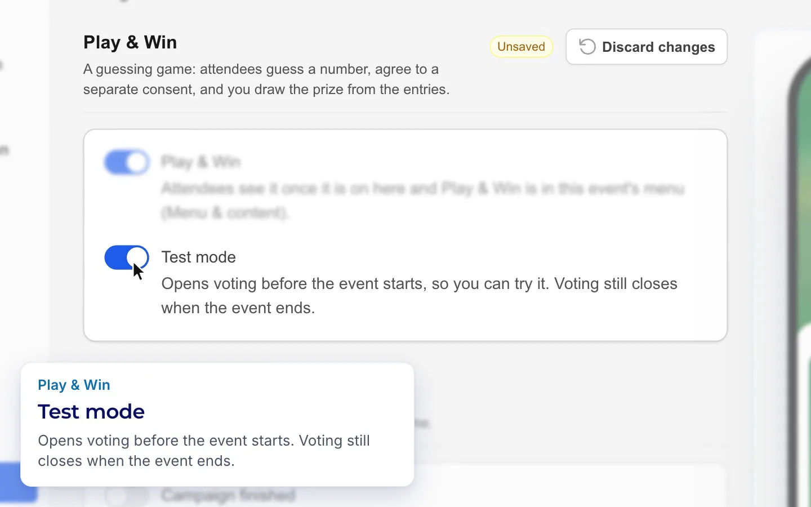
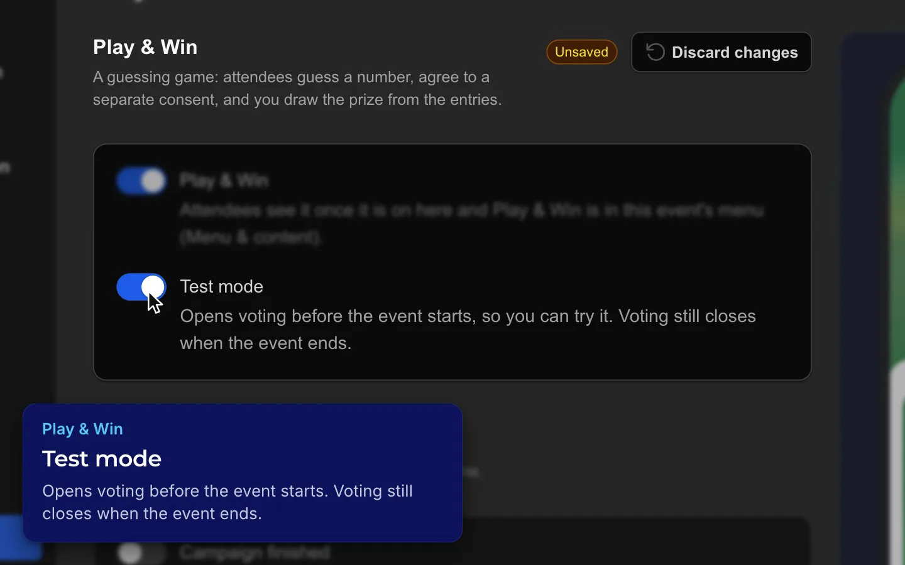
Test mode switched on: App Studio marks the event Unsaved until you save.App Studio, redrawn and animated from its code.Whole film
Voting then opens before the event starts, and still closes when the event ends.
Watch out
Test mode opens voting for everyone who can see Play & Win, not only for you.
A vote made while testing is a real entry: it shows in Entries and counts as that person's one entry for the event.
If voting should then wait for the event, switch Test mode off and save again.
Done when: Your test vote shows in Entries after you press Refresh.
Stage 5 of 6
Let visitors play on the stand iPad
Visitors without the app type their name, company and email on the stand iPad, guess, and enter the same draw. One email plays once, in the app or on the kiosk.
10
Under Kiosk (stand iPad), switch Kiosk on and press Save Play & Win.
Your move
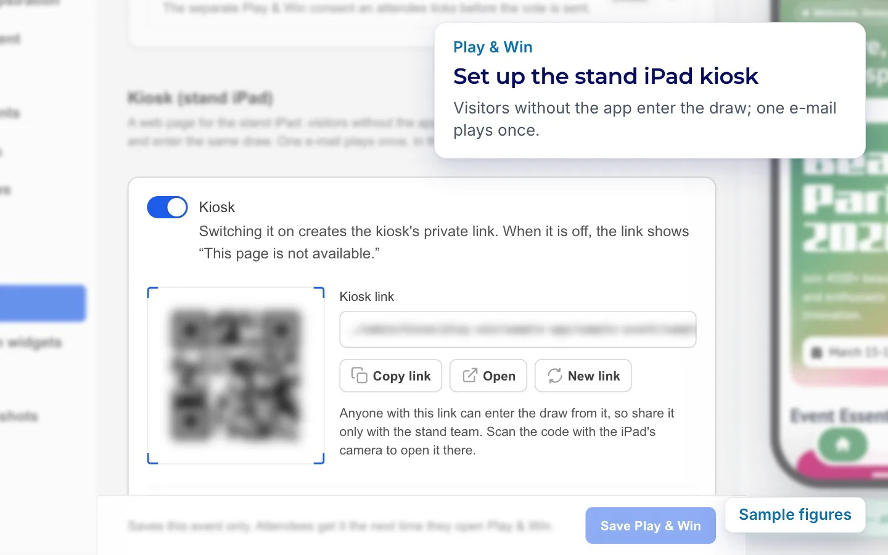
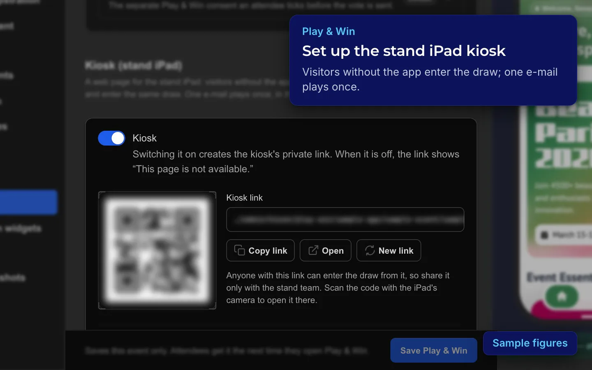
Kiosk on: a placeholder QR code and link, kept soft; once saved, Save to activate goes.App Studio, redrawn and animated from its code.Whole film
Switching it on creates the kiosk's private link and its QR code, and the link works once you save.
Watch out
As App Studio says, “Anyone with this link can enter the draw from it, so share it only with the stand team.”
Play & Win itself must be on too: while it is off, the kiosk shows “Voting is closed”.
The kiosk has its own consent, separate from the app's: unless you reword it in Consent text, under Kiosk (stand iPad), the English one reads “By playing Play & Win you agree to receive emails about the prize draw.”
Done when: The QR code and the Kiosk link show, without the Save to activate badge.
11
On the iPad, scan the QR code, add the page to the Home Screen and lock the iPad to it with Guided Access.
Your move
Setting up the stand iPad
“Open the link in Safari on the iPad: scan the QR code with its camera.”
“Tap Share, then Add to Home Screen, and start Play & Win from the Home Screen: it runs full screen, in portrait or landscape.”
“Lock the iPad to it with Guided Access (Settings, Accessibility, Guided Access; then triple-click the top button), and set Display & Brightness, Auto-Lock to Never while the stand is open.”
“After each vote the page clears itself for the next visitor after 20 seconds.”
Drawing based on App Studio's code: The four set-up steps App Studio shows while Kiosk is on
Kiosk votes are real entries: they show in Entries with the source Kiosk.
Watch out
If the iPad shows “This page is not available.”, check that Kiosk is on and saved, and that the iPad opened the current link.
A new link, made with New link and saved, replaces the old one, which then stops working: scan the new QR code on the iPad.
To pause the kiosk, switch Kiosk off and save; switching it on again brings back the same link.
Done when: Play & Win runs full screen on the iPad, from its Home Screen.
Stage 6 of 6
Close voting and draw the prize
Once the campaign is finished, voting is never open, on the kiosk too. Entries are deleted three weeks (21 days) after the event ends, so download them before then.
12
Under Result, switch Campaign finished on, type the Actual number and press Save Play & Win.
Your move
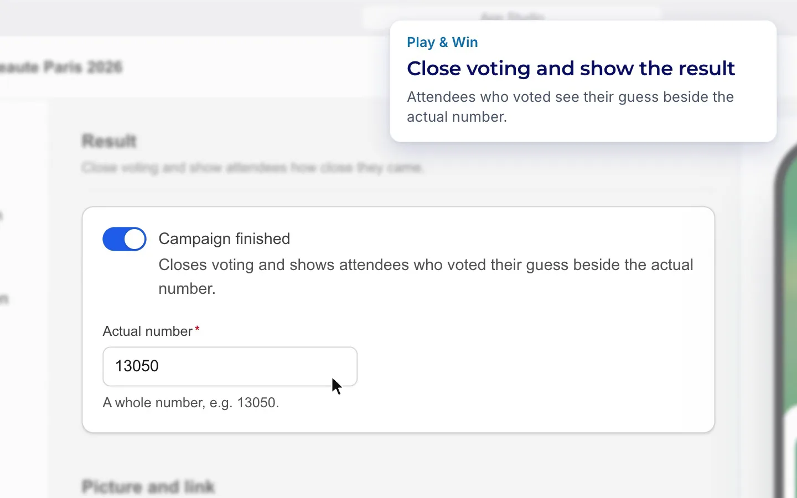
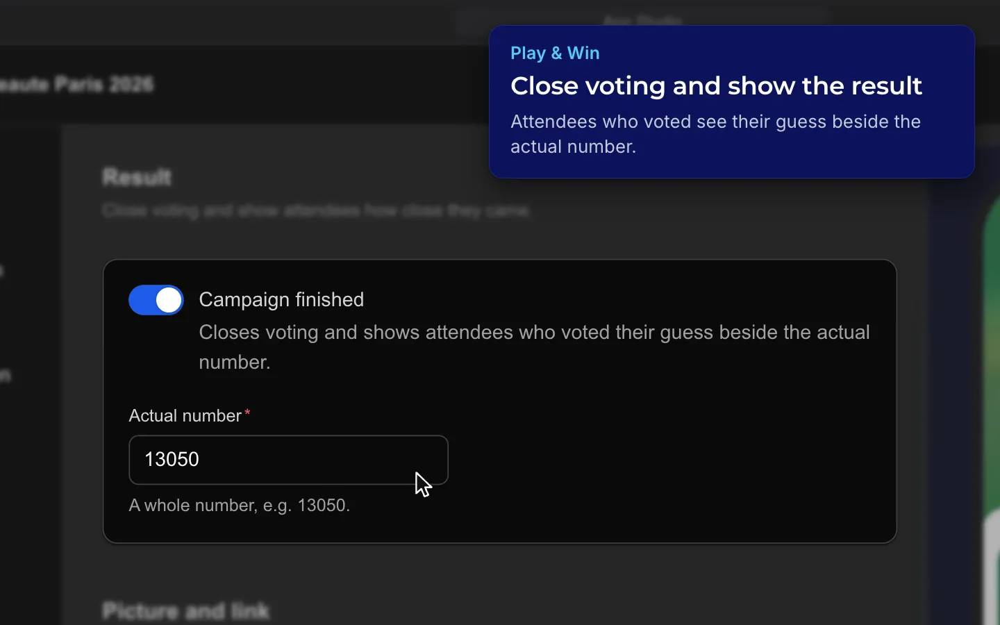
Campaign finished on, 13050 typed as the actual number, and saved.App Studio, redrawn and animated from its code. Phone: the app in App Studio's preview, with sample content, October 2026.Whole film
Voting closes, and attendees who voted see their guess beside the actual number on the final screen.
Watch out
If App Studio says “Fix the highlighted fields before saving.”, fill in or correct the number: a whole number, digits only, up to 999,999,999, such as 13050.
Done when: You saved with Campaign finished on and the actual number filled in.
13
Before the draw, delete each test entry with its trash button in Entries, then Delete entry.
Your move
Play & Win
Entries
Keep itDelete entry
Drawing based on App Studio's code: The confirmation “Delete this entry?” in Entries, with Keep it and Delete entry
Votes made while testing, in the app or on the kiosk, are real entries until you delete them.
Watch out
Deleting cannot be undone: the entry leaves the prize draw for good.
Done when: The list reloads without the entry.
14
In Entries, press Refresh, then Download CSV for the prize draw.
Your move
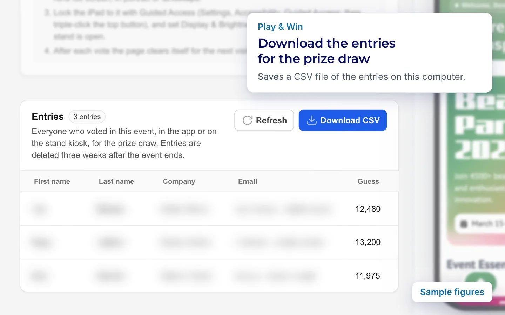
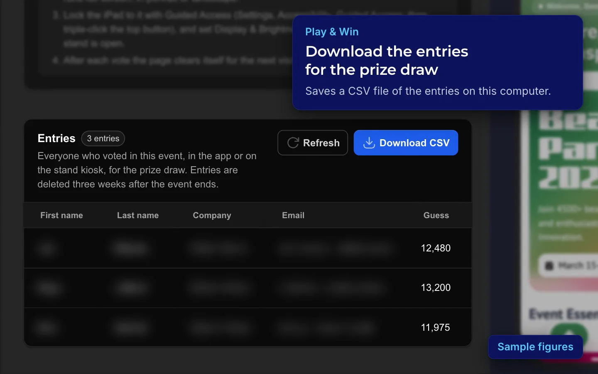
Three sample entries: Refresh reads them again, then Download CSV saves the file.App Studio, redrawn and animated from its code.Whole film
The file lists every entry of the event, from the app or the kiosk, whatever the attendee's Networking setting.
Watch out
Entries are deleted three weeks (21 days) after the event ends: download them before then.
Done when: A file named play-win-[event]-[date].csv is on your computer.
Something's wrong?
Pick what you see.
Why: The app's AI assistant is set by your ExpoPlatform team, and without it this widget “would have nothing to open”.
Why: A widget ships with your next build: phones need a build made after you switched it on.
What to do: Make a new build in Build & test and publish it as a new version; phones show the change once it is installed, and to have people on older versions asked, or made, to update, ask your ExpoPlatform contact.
Why: The app shows the Play & Win row only to signed-in people, only when the event's menu carries the row, and only while the campaign is on.
What to do: Check that Play & Win is on and saved for that event, and that it is in that event's menu in Menu & content; if it is not, ask your ExpoPlatform contact; people see it only once they are signed in.
Why: Voting is open during the event's own dates, or earlier while Test mode is on, and never once the campaign is finished; the kiosk also needs Play & Win itself on.
What to do: Switch Play & Win on and save; to open voting before the event starts, switch Test mode on and save.
Why: The actual number or the Book a meeting link has a problem.
What to do: Correct the highlighted field, then save: the actual number is a whole number, digits only, up to 999,999,999, and the link a full web address, or empty.
Every step comes from the App Studio guide. App Studio Playbook v1.1.1, built from the App Studio guide v1.1.0, checked against App Studio c1421d4 on 14 Oct 2026.
Show me: Get people using the app
Use ← and → to move
Words from a step or a problem, such as build, widget or greyed out.